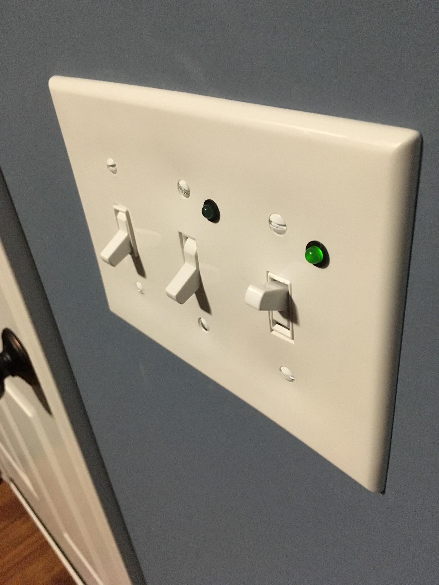
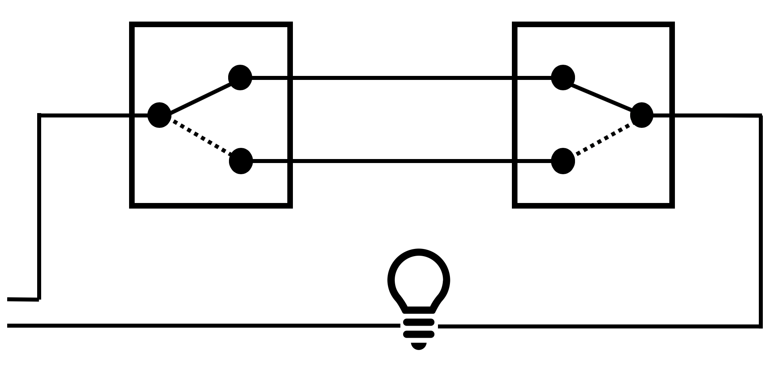
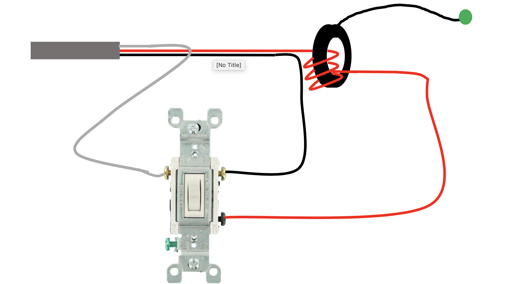
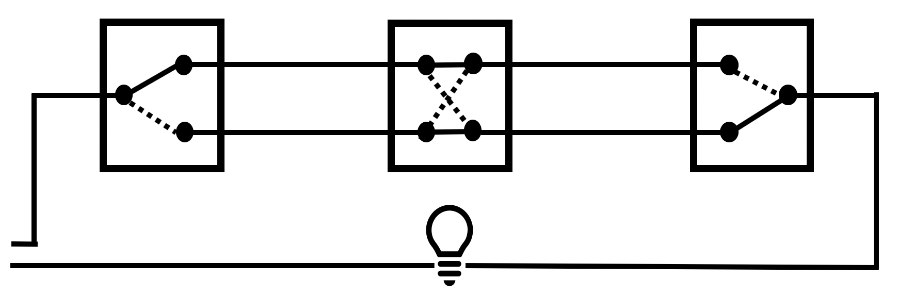
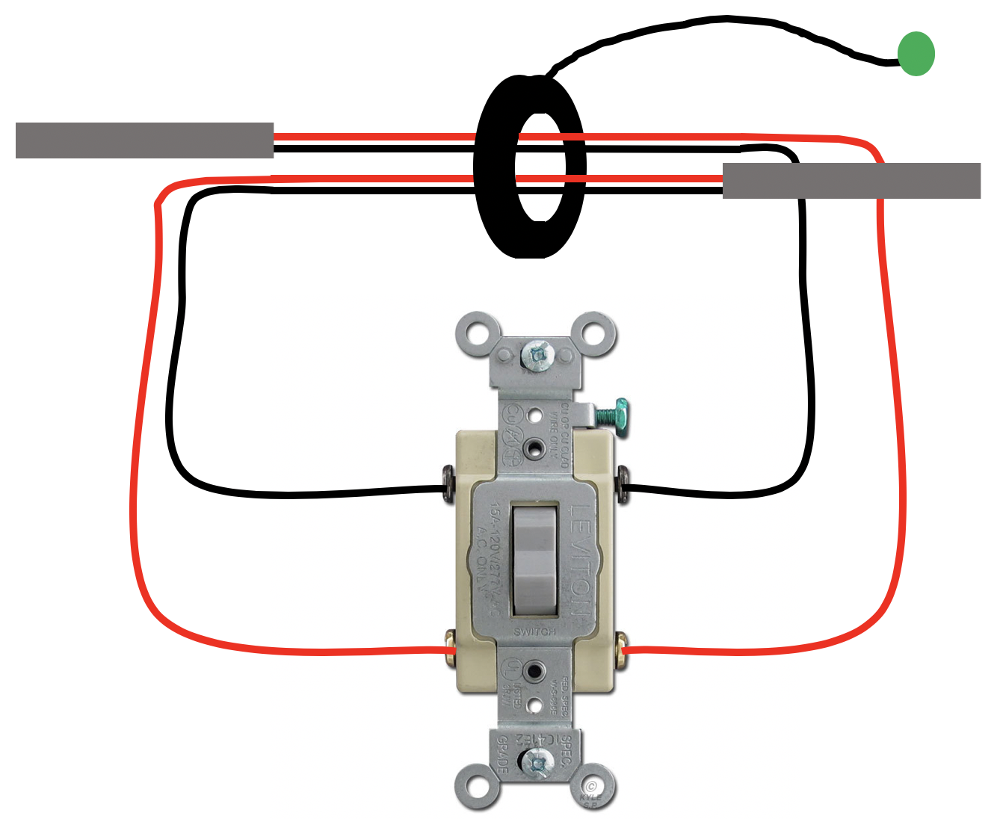
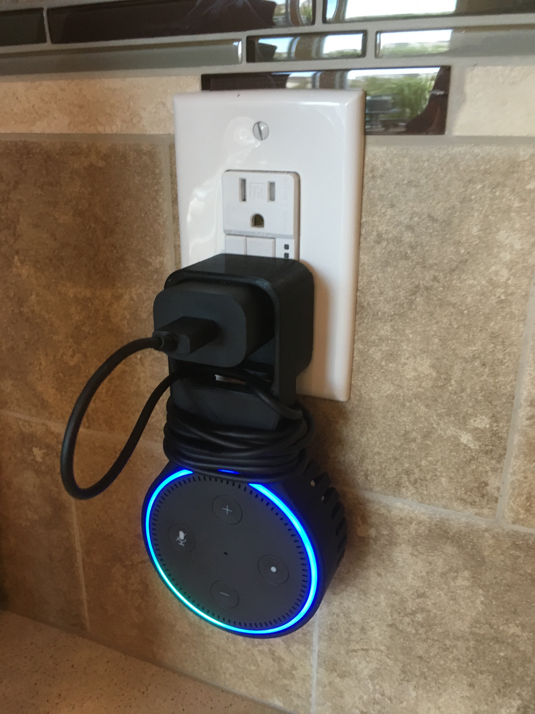
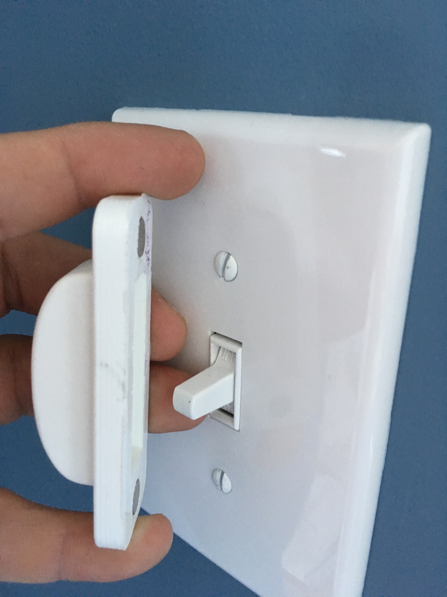

Three and Four way switch status lights
Tue 01 January 2019 by Dr. Dirk Colbry
There are two light switches in our mudroom that control the garage lights and the lights on the front of the house. Unfortunately I can not see these lights when standing next to the switches and sense there are multiple switches for each light you can not know if the lights are actually on or off. I decided to install an indicator light next to the switch to tell if the lights are on or off.
I did some web searching and there are some three way switches with "pilot" or indicator lights. However, most of these are lit when the switch is off and I wanted them to be lit when on. I also didn't really like the look of most of them.
Attempt 1 - 120v LEDs (Spoiler, this Didn't work)
I found some really cool 120V LEDs on Amazon. My thought was to wire one in series with my lights. However, once I got them and tried them out the LEDs worked fine but the outside lights didn't work at all. I slapped my head realizing that the "D" in LED stands for "diode" and I was chopping off the A/C signal.

Attempt 2 - two 120v LEDs (This didn't work either)
The obvious solution (to me) was to just use two of the 120V LEDs with going in opposite directions this way current would always be able to flow though them. That didn't work either. Not exactly sure why... my best guess is that the LEDs dropped the current or voltage in such a way that the outside lights no longer could work. To be honest I didn't spend much time debugging the problem because I came up with another solution...
Attempt 3 - Remote Current Indicator (This one worked nicely)
For my third attempt I found some Low Cost Remote Current Indicators.

What is nice about these is that they get their power though induction instead of directly being wired in. The only trick was to ensure that enough current is going through them to get the attached LEDs to work. Fortunately wrapping the wires around the doughnut increases the current.
The trick was to figure out how to get them to work properly with three way and four way switches. The three way solution is fairly strait-forward, all you need to do is wrap the wire going to the light fixture around a few times and the indicator turns on anytime the light turns on. Here are a few diagrams I quickly made to show you how it works.
 
I didn't realize until I had it all apart the third time that the garage ligth is a four way switch and not just a three way switch. This caused some head scratching since I could not know for sure which wires would be hot. The solution was to pass all the wires though as shown in the following figure. This only gave me one "loop" but that proved to be enough to get the LED to light up.
 
Anyways, fun little project and now I can tell if my lights are on. !
Alexa Dot Holder

My brother got me an Alexa Dot for Christmas a few years ago. It turns out to be a lot of fun. We put it in the kitchen and the kids play music. My wife and I also use it to add things to our shopping list (very convenient!) Anyway …
read more3D printed Switch Guard

We recently moved into a new house and the kids are having fun running around turning on and off all the lights. Unfortunately, some of the light switches are not for lights. One goes to our garbage disposal, another goes to the gas fireplace and another turns off the furnace …
read moreMigration from Blogger to Pelican
Today I was showning someone my old Blogger website and one of the reasons I moved away from blogger is that it was hard to edit and did not work well with my workflow. It occured to me that it may be easy to migrate from Blogger to my new Pelican Blog.
read moreFarmBot
JJRobotics
CNC Mill Picking
I am interested in purchasing a CNC machine for the shop space in our new house. I think I would like to stick to something around $1000 but would be willing to invest as much as $2000 if I can find the right machine. There are a lot of choices …
read moreIntrducing a 3D printer to my daughter's Kindergarten class
We had fun showing off my 3D printer to the Kindergarten class. Although the printer is fun to watch, kids tend to get board with it in just a few minutes. I like to come up with classroom projects that let the kids use things that are printed with the …
read moreElectric box extender
I have been having trouble with my 3D printer over the last couple of months. It turns out that the fans got disconnected. Once I fixed the problem my printer is working better than ever. I was itching for something to print so I came up with this simple spacer …
read moreUltimaker 2, cleaning a clogged nozzle
So my Ultimaker2 extruding head got clogged, really bad. Something got jammed while printing and I could not get the filament to feed. This had happened once in the past when I tried using some really cheap filament but I am not sure the real root of the problem this …
read more